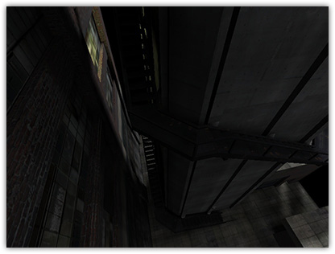

Q3Map2 light styles are a way to simulate flickering/blinking dynamic lights by modulating values between up to 3 different dynamic lightmap styles per surface. This feature was added in Q3Map2 to support Quake 3 and RTCW. SOF2/JK2 already have native support for light styles. Light styles will only affect lightmapped objects, it has no effect on vertex lit objects and the light grid.
To create some flickering lights, we need some waveform functions. These are set on the worldspawn entity in Radiant's Entity Inspector using two new available key/value pairs: _styleNrgbGen and _styleNalphaGen keys, where "N" is the style index number, an integer between 1 and 31. Both keys will take standard waveform functions as values. As an example:
_style1alphaGen wave sin .5 .3 .25 1.5 _style1rgbGen wave noise 0.5 1 0 5.37 _style2alphaGen wave sin .8 .3 .25 1.5 _style2rgbGen wave square -.3 1.3 0 5.3 classname worldspawn
Next, we need to associate your lights with the style index numbers that were set in the worldspawn. You can add light styles to either light entities or light emitting shaders.
With a light entity selected, open up the Entity Inspector and add a "style" key. Use a value between 1 and 31 matching the style index number previously set in the worldspawn.
You can also use q3map_lightStyle N, where "N" is a value between 1 and 31 matching the style index number set in the worldspawn, on light-emitting shaders to have them emit styled light.
textures/slstyle/light
{
q3map_surfacelight 3700
q3map_lightStyle 1 // sets style index #1
{
map $lightmap
rgbGen identity
}
q3map_styleMarker // note: after the $lightmap stage
{
map textures/slstyle/light.tga
blendFunc GL_DST_COLOR GL_ZERO
rgbGen identity
}
{
map textures/slstyle/light.blend.tga
blendfunc GL_ONE GL_ONE
}
}
For any shaders that may be hit by a styled light, you'll need to add q3map_styleMarker after the lightmap stages and before the texture stages so Q3Map2 can properly create the fake lightmap stages. For masked textures where a depthFunc equal is required, add q3map_styleMarker2.
Shaders with lightmaps after texture passes will look odd. This may change in the future. Try to rearrange your shaders, if possible, to have lightmaps first.
textures/slstyle/plywood2sided
{
cull none
qer_editorImage textures/slstyle/plywood-2-tone.tga
{
map $lightmap
rgbGen identity
}
q3map_styleMarker // note: after the $lightmap stage
{
map textures/slstyle/plywood-2-tone.tga
blendFunc GL_DST_COLOR GL_ZERO
rgbGen identity
}
}
Compile your map with Q3Map 2.5.5-test-6 or later. Be sure to use the -nocollapse switch in the -light phase. This is important, because styled lights generate shaders, and this minimizes the number of unique shaders.
In game, you might get a warning message in the console, "WARNING: reused image *lightmap4 with mixed glWrapClampMode parm", which you can safely ignore.